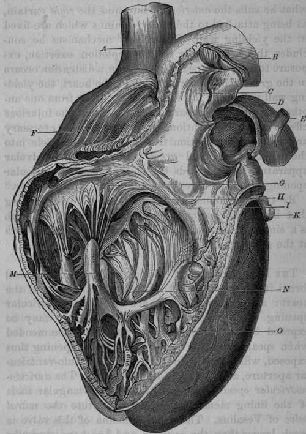

The Right Ventricle
Description
This section is from the book "Anatomy Of The Arteries Of The Human Body", by John Hatch Power. Also available from Amazon: Anatomy of the Arteries of the Human Body, with the Descriptive Anatomy of the Heart.
The Right Ventricle
The Right Ventricle has the form of a cone, one side of which has been hollowed out to accommodate the convexity of the left ventricle. Its apex is turned in the same direction as the apex of the heart; but, in the adult, does not extend so low. Its base presents, anteriorly and to the left side, a funnel-shaped pouch, called the infundibulum, or conus arteriosus, from which the pulmonary artery arises; and, posteriorly, the opening into the right auricle: between these two openings it corresponds to the origin of the aorta. In order to expose its interior, an incision should be made into it, in the direction of the axis of the heart, and close to the septum ventriculorum.
The internal surface of the right ventricle is exceedingly rough, from the development of a number of muscular prominences, termed the carneae columnae: of these there are three orders: those of the first order are attached by both extremities and by one side to the ventricle; those of the second are attached by their two extremities; and those of the third order are attached by only one extremity to the ventricle, the other being connected, through the medium of tendinous chords (chordce tendineae), to the valves of the auriculo-ventricular opening. The two first are supposed to be for the purpose of mixing the blood more completely; but those of the third order, contracting at the same time with the ventricle, prevent the blood from forcing back the valves into the auricle. That portion of the interior of the ventricle which forms the infundibulum, is exceedingly smooth, in order to facilitate the flow of blood into the pulmonary artery; and it will be observed, that several of the columns of the first and second orders have one of their extremities attached to the commencement of that portion of the septum, which contributes to form the infundibulum. By means of this beautiful arrangement, these columns, during the contraction of the ventricle, draw upon this portion of the infundibulum, and so, by maintaining its tension, preserve its smoothness of surface for the passage of the blood into the pulmonary artery. The right auriculo-ventricular opening is seen at the base of the ventricle, posteriorly, and about an inch to the right of the orifice of the pulmonary artery: it is circular when the blood is passing through, but elliptical at other times. Surrounding this opening are seen three triangular folds of the lining membrane or endocardium, which constitute the tricuspid valve. This valve consists, as its name implies, of three portions, each triangular; the base attached to the zona tendinosa, surrounding the right auriculo-ventricular aperture, the apex connected with the chordae tendineae; the anterior portion corresponds to the anterior wall of the right ventricle; the posterior corresponds to the septum ventriculorum; and the left division looks towards the opening of the pulmonary artery: this last is the largest portion of the valve, and is called the valvular septum of Lieutaud of the right ventricle : it is supposed to be of use in preventing any of the blood flowing from the right auricle, from getting directly into the pulmonary artery, until it has first filled the right ventricle: by this arrangement the blood becomes subject to the entire force of the right ventricle, in order to its propulsion through the pulmonary vessels. The auricular surface of the tricuspid valve is extremely smooth, for the purpose of facilitating the flow of blood into the ventricle; whilst the surface which corresponds to the walls of the ventricle is remarkably rough, from the prominences formed by the chordae tendineae. To the margins of the valve the chordae tendineae are attached, and afterwards become spread out, interlacing with each other, so as to give rise to a strong fibrous expansion between the foldings of the lining membrane which form each division of the valve: they are ultimately lost by becoming continuous with the zona tendi-nosa surrounding the base of the ventricle. The tricuspid valve prevents the blood from returning into the auricle, when the ventricle contracts to expel it into the pulmonary artery: this, however, it does not do completely, as a certain amount of regurgitation is permitted into the right auricle at this particular moment, in the healthy condition of the parts. In 1792, John Hunter writes, " I have reason to believe that the valves in the right side of the heart, do not so perfectly do their duty, as those of the left; therefore, we may suppose it was not so necessary."* Many years back, Mr. Adams saw the force of Hunter's observation, and fully appreciated its importance. In his original and admirable paper on Diseases of the Heart, published in 1827, when speaking of the fact alluded to by Hunter, he observes, "This circumstance, in my opinion, has not been sufficiently noticed, nor the influence that such a structure may have on the circulation in its natural, or morbid state, considered.—Such a provision was absolutely necessary in the right or pulmonary ventricle, as various natural causes must momentarily retard the passage of blood through the lungs. In the natural state of the heart, it is probable that there is constantly some little reflux into the right auricle, during the contraction of its corresponding ventricle, as the valves readily admit it; but the great swelling of the jugular veins is only seen when extraordinary efforts are made, or when, from any enlargement of the right side of the heart, it is capable of containing a larger quantity of blood than it can readily transmit through the lungs, or the left receive; on these occasions it is, that the pulsations in the jugular veins become evident; they are synchronous with the action of the heart. Upon the whole, therefore, I would conclude, that the pulsation in the jugular veins, viewed as a symptom of the disease we have been just considering (contraction of the left auriculo-ventricular opening), depends upon this, that the right ventricle, unable to transmit all the blood which distends it, through the pulmonary artery, part of it must regurgitate towards the auricle, and displace a column of blood descending into this cavity from the jugular veins, causing thus a momentary reflux or pulse in the veins nearest the right auricle."* In the second volume of the Guy's Hospital Eeports, 1837, Mr. King published "An Essay on the Safety-valve Function of the Human Heart," etc, and adverts to the fact stated by John Hunter. Mr. King calls the septum of the ventricles the solid wall of the right ventricle; and its anterior, he calls the yielding wall. Between these two walls he describes a muscular band as stretching across the area of the right ventricle; he calls this the moderator band, and believes it to be of use in limiting distention of this cavity. Of the three divisions of the tricuspid valve, he describes two, viz., what he calls the anterior curtain and the right curtain, as being attached to the fleshy columns which are fixed in the yielding wall. From this mechanism he concludes, that when from sudden repletion, exertion, exposure to cold, or impeded respiration, a distention occurs in the great veins and right side of the heart, the yielding wall will carry the valves partly away from one another, and by such separation will prevent the injurious effects of over-distention, by producing the necessary amount of regurgitation from the right ventricle into the right auricle and great veins. To this valvular apparatus, which guards the right auriculo-ventricular opening, Mr. King gives the name of the "safety-valve".
* " Treatise on the Blood," etc. page 177.
* " Cases of Diseases of the Heart," etc, in 4th vol. of Dublin Hospital Reports, pp. 437-438.
Fig. 1. This figure, represents the anterior part of the Right Ventricle and Pulmonary Artery laid open and turned upwards.
A Superior Vena Cava. B, The Aorta. C, The Semilunar Valves of Pulmonary Artery. D, The Pulmonary Artery. E Remains of the Ductus Arteriosus. F Right Auricle. G, Tricuspid Valve. H, Portion of Right Aurlculo-Ventricular Opening. I, Fleshy Column connected with the Septum of The Ventricles by one extremity, and with the Valvular Septum of Lieutaud by the other. K, Part of Left Auricle, M, Carneae Columnae attached to the Chordae Tendinae. N, Cavity of Right Ventricle. O, Septum Veutriculorum.
By the "tendinous zone" is meant the whitish ring that binds the auriculo-ventricular opening: as there is a similar one on the left side, we shall consider both at the same time.
Continue to: